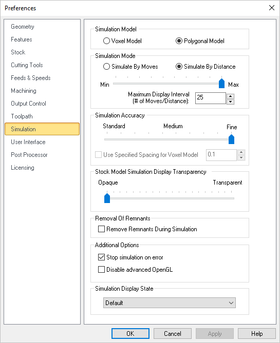
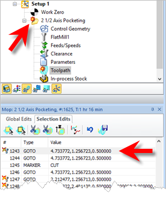
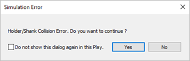
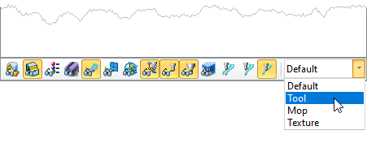

You can set the simulation preferences using this dialog. Note: Some options are not available in XPR (Xpress) configuration.
 CAM Preferences > Simulation |
In the RhinoCAM MILL module you can choose between two simulation models. One is called the Voxel Model and the other the Polygonal Model. Voxel Model Polygonal Model Here is an example of a cylinder stock model representation with Voxel and Polygonal model.
|
You can set the simulation mode to Distance or by Motion. Simulate by Motion simulates the toolpath based on the number of go to motions in the generated toolpath. Simulate by Distance uses a distance based approach. Note: * This feature is not available in Xpress configuration.
|
This setting is used to control the accuracy of display of the simulated model. You can control the accuracy of the stock model by selecting from Standard, Medium or Fine. The finer the stock model accuracy results in slower performance and increases the simulation time. Use Specified Simulation Spacing for Voxel Model When Voxel Model is selected (see Simulation Model above), you can also specify the spacing for the Voxel model. Check the box and enter the Spacing distance desired. |
Use this slider to adjust the Stock Model Transparency when the Simulate tab is selected (i.e., when you are performing a cut material simulation). |
Check this box to Remove Remnants During Simulation. Any disassociated stock will be removed from the simulation. |
Stop Simulation in Error Check this box to pause the Simulation at each error flag. If enabled, a message will display asking if you wish to continue with the simulation. Selecting Play will simulate to the next error flag and then pause. etc.  Stop Simulation at Error Flag  Stop Simulation at Error Flag message Disable Advanced OpenGL Check this box only if you have an older graphics card adapter that does not support advanced OpenGL (i.e., OpenGL 2). Some older cards may only support OpenGL 1 for example. If you experience graphics instability checking this box may help resolve the issue. |
Select how color is applied to toolpaths during simulations. Choose from the following: •Default: The CAM preferences for Stock Colors are applied. See the Stock tab in the CAM Preferences dialog. •Tool: The Cut Material color assigned to the tool is applied. See the Create/Edit Tool Dialog •Mop: The color properties of the Machining Operations (Mops) are applied. Right-click on the MOp and select Properties. •Texture: The material texture defined in the Materials dialog is applied. Select Materials from the Program tab. To change the display state manually, go to the Simulate tab and adjust the Display State menu located at the bottom of the Machining Browser as shown below.  |